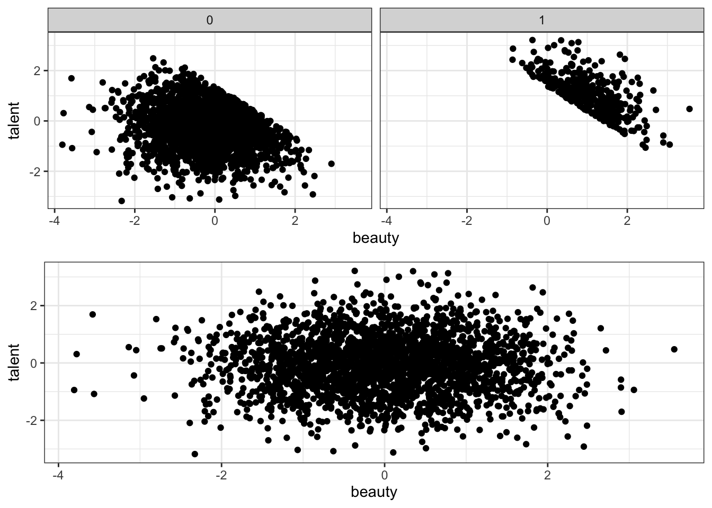

3 DAGs
3.1 Collider Bias
set.seed(541)
N <- 10000
female <- runif(N) >=0.5
ability <- rnorm(N)
discrimination <- female
occupation <- 1 + 2*ability + 0*female - 2*discrimination + rnorm(N)
wage <- 1 - discrimination + occupation + 2*ability + rnorm(N)
# Create collider Bias
lm(wage ~ female)##
## Call:
## lm(formula = wage ~ female)
##
## Coefficients:
## (Intercept) femaleTRUE
## 1.944 -2.858##
## Call:
## lm(formula = wage ~ female + occupation)
##
## Coefficients:
## (Intercept) femaleTRUE occupation
## 0.1822 0.6382 1.7921##
## Call:
## lm(formula = wage ~ female + occupation + ability)
##
## Coefficients:
## (Intercept) femaleTRUE occupation ability
## 0.9863 -0.9716 0.9954 2.00803.2 Collider Bias 2 Qualitative Change in Sign
library(estimatr)
set.seed(541)
N <- 2500
z <- rnorm(N)
k <- rnorm(N, 10, 4)
d <- ifelse(k >=12, 1, 0)
# Treatment effect is 50. Notice that y is not a function of X
y <- 50*d + 100 + rnorm(N)
x <- 50*d + y + rnorm(N, 50, 1)
collider2 <- data.frame(y =y,
x= x,
d = d)
lm_robust(y~d, data = collider2, se_type = "stata")## Estimate Std. Error t value Pr(>|t|) CI Lower CI Upper DF
## (Intercept) 99.98252 0.02405992 4155.564 0 99.93534 100.02970 2498
## d 50.01345 0.04229452 1182.504 0 49.93051 50.09638 2498## Estimate Std. Error t value Pr(>|t|) CI Lower CI Upper
## (Intercept) 24.9846086 0.056062156 445.6591 0 24.8746755 25.0945416
## x 0.4999951 0.000297306 1681.7525 0 0.4994121 0.5005781
## DF
## (Intercept) 2498
## x 2498## Estimate Std. Error t value Pr(>|t|) CI Lower
## (Intercept) 26.1083212 1.468030563 17.7845897 1.020515e-66 23.2296388
## d 0.7501925 0.981099670 0.7646445 4.445555e-01 -1.1736601
## x 0.4925021 0.009794007 50.2860663 0.000000e+00 0.4732969
## CI Upper DF
## (Intercept) 28.9870036 2497
## d 2.6740450 2497
## x 0.5117073 24973.3 Collider Bias Nonrandom Sample selection
library(ggplot2)
library(ggpubr)
set.seed(3444)
N <- 2500
beauty <- rnorm(N)
talent <- rnorm(N)
# Collider variable
score <- beauty + talent
cutoff <- as.numeric(quantile(score, probs = .85))
star <- ifelse(score >= cutoff,1, 0)
movie <- data.frame(beauty = beauty,
talent = talent,
star = star
)
overall <- ggplot(movie, aes(beauty, talent))+
geom_point()
splitByStar <- ggplot(movie, aes(beauty, talent))+
geom_point()+
facet_wrap(~star)
ggarrange(splitByStar, overall, ncol = 1, nrow = 2)